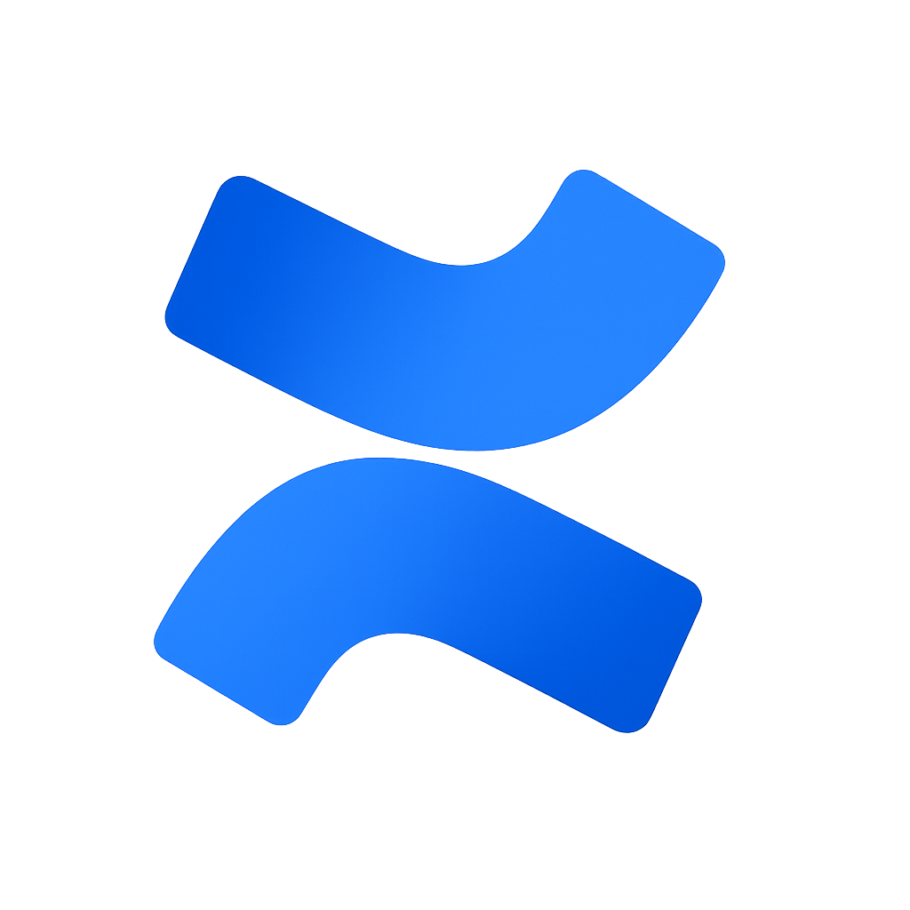
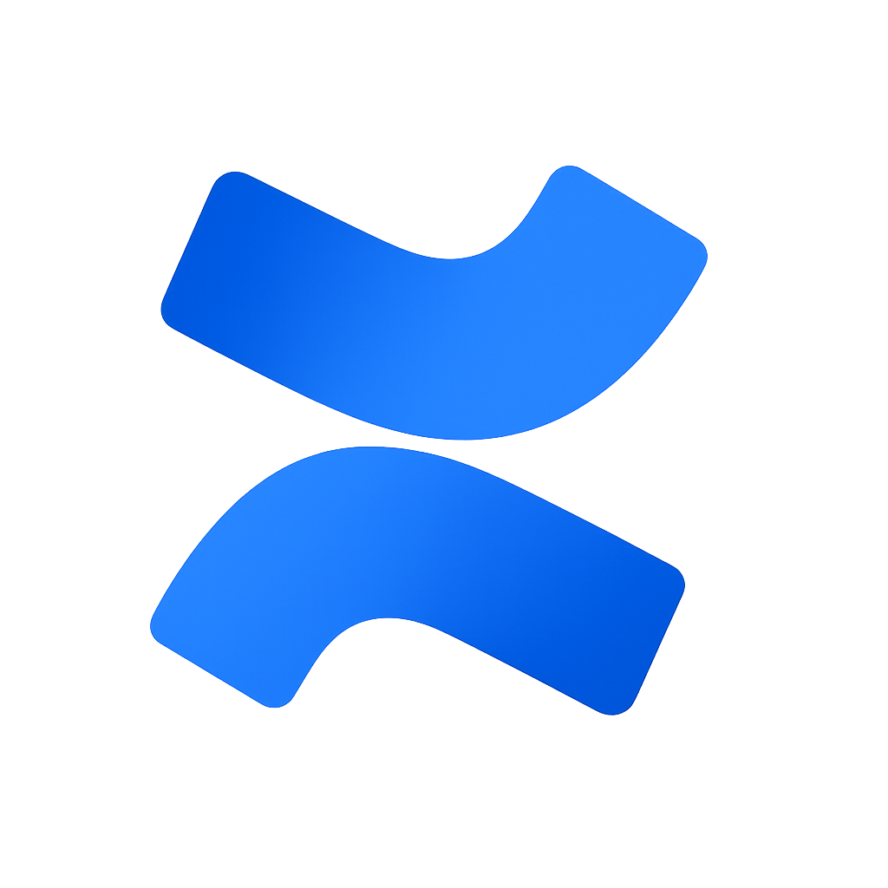
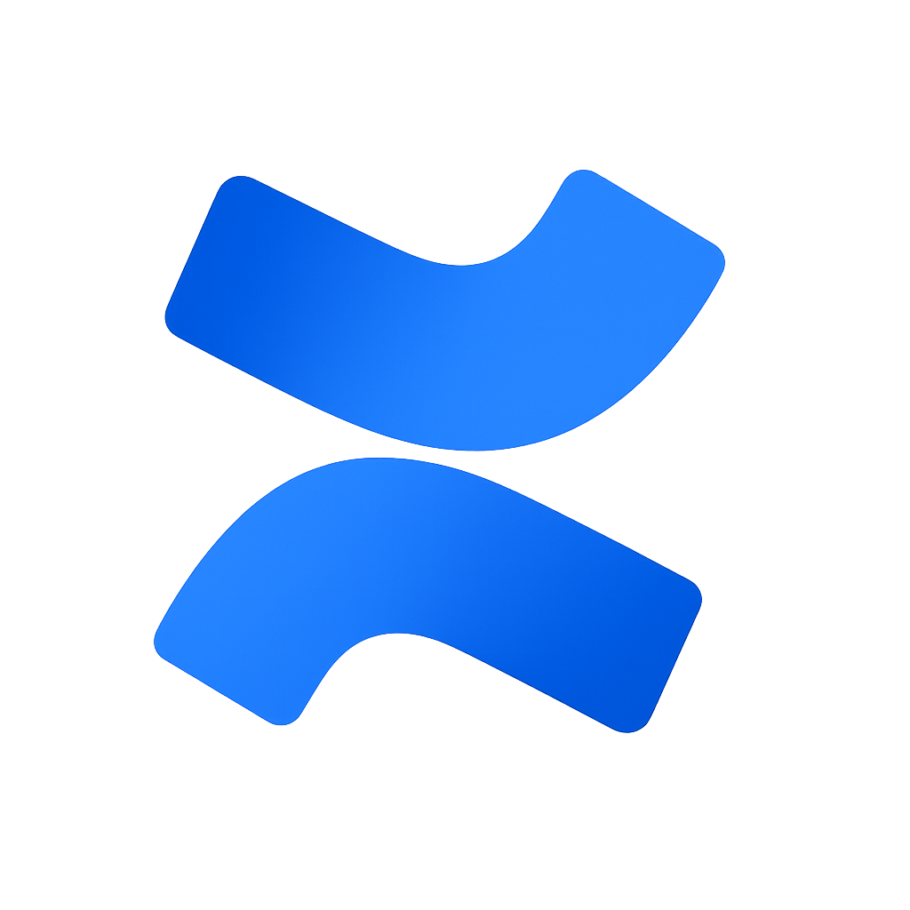

Habilidades
 


Laura es una gestora de proyectos y QA comprometida con garantizar la calidad en cada detalle. Su trabajo se enfoca en pruebas funcionales, detección de errores y seguimiento continuo, asegurando el correcto funcionamiento y éxito de los proyectos web y móviles en los que participa.
Prueba aplicaciones móviles y web, detectando errores y optimizando la calidad del software para garantizar una experiencia fluida.
Planifica y da seguimiento a proyectos tecnológicos, asegurando su correcta ejecución y cumplimiento de los objetivos establecidos.
Recopila, analiza y documenta las necesidades del cliente, garantizando una comunicación clara entre el equipo técnico y los usuarios finales.

Plataforma social en desarrollo donde los usuarios pueden crear publicaciones de texto, imágenes y videos, con interacción por likes, comentarios, reposts y guardados.
Rol: QA Tester y PMPlataforma de comercio electrónico y servicios para emprendedores y compradores. Enlace directo entre vendedores y clientes a nivel nacional e internacional.
Rol: QA Tester y PM
Aplicación y servicio de geolocalización que permite crear y compartir direcciones estandarizadas en todo el mundo, tanto para usuarios individuales como para empresas.
Rol: QA Tester & PMAplicación móvil y web que gestiona alojamientos vacacionales, reservas, pagos y comunicación entre anfitriones y huéspedes.
Rol: QA Tester y PM
Sistema integral de inventario y gestión operativa, orientado a mejorar el control logístico, la eficiencia administrativa y la supervisión general de sus operaciones.
Rol: QA Tester y PMPlataforma en línea del servicio Lolo, que permite a los usuarios comprar en tiendas nacionales como internacionales y recibir los productos en El Salvador.
Rol: QA Tester y PM